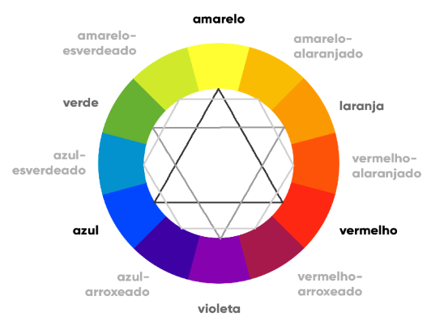

Cores
Representação por nomes das cores (opção limitada)
Representação por códigos hexadecimais (amplia a quantidade de cores disponíveis para uso). Os códigos se dão a partir da mistura de red, green e blue (RGB). Utilize o Gimp para captar cores e seus códigos, por exemplo
Representação por características das cores, como por exemplo MATIZ, SATURAÇÃO E LUMINOSIDADE, utilizando a função de CSS <hsl> e definindo a quantidade de cada elemento
Representação através das composições de RGB, utilizando a função de CSS <rgb> e definindo as quantidades, podendo até mesmo mexer com a transparência
Círculo Cromático
Harmonia e Temperatura
Cores primárias: amarelo, vermelho, azul
Cores secundárias: laranja, violeta (roxo), verde
Cores terciárias: todas as outras que são misturas de cores primárias e secundárias
